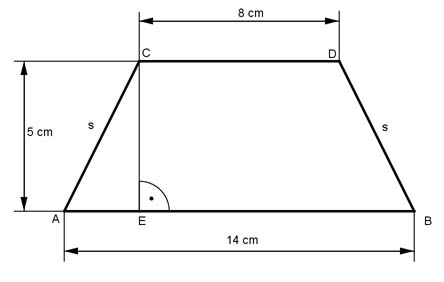

Pythagoras Aufgabe 19 Berechnen Sie die Länge der Seite s des gleichschenkligen Trapezes in cm.  14 cm - 8 cm AE = -------------- = 3 cm 2 Satz von Pythagoras im Dreieck AEC: s² = AE² + EC² s² = 3² cm² + 5² cm² = 34 cm² |√ s = 34 cm² = 5,8 cm